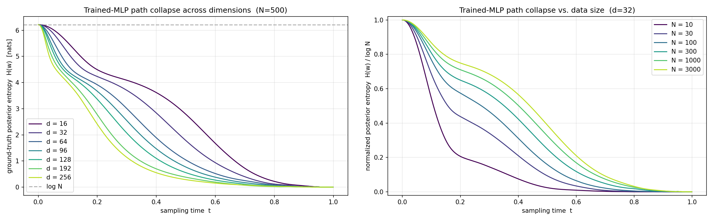
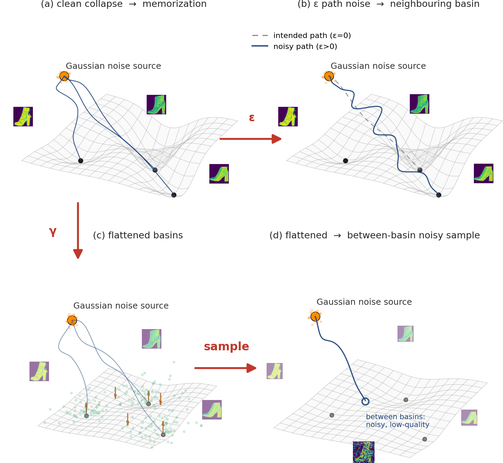
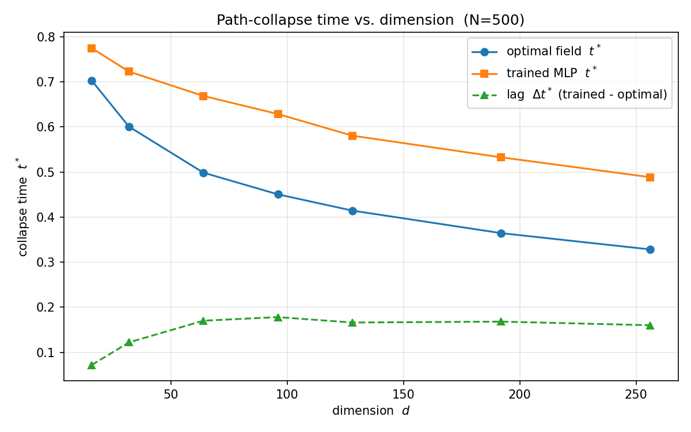
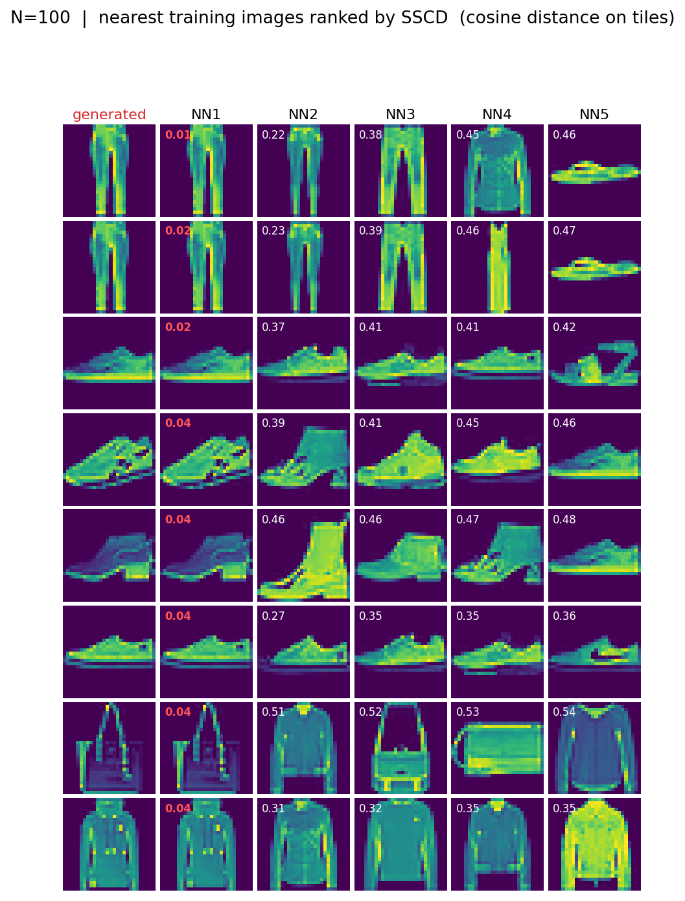
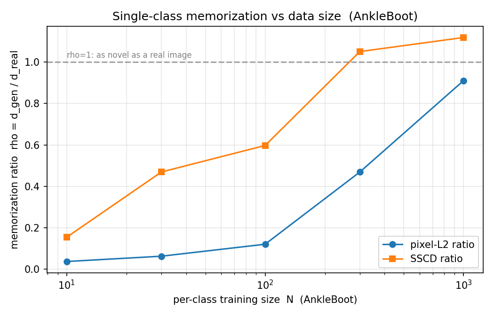
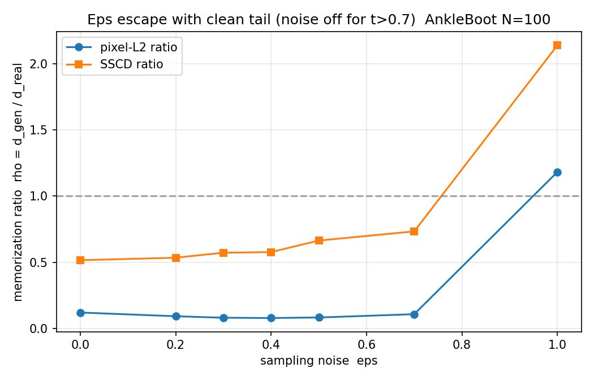
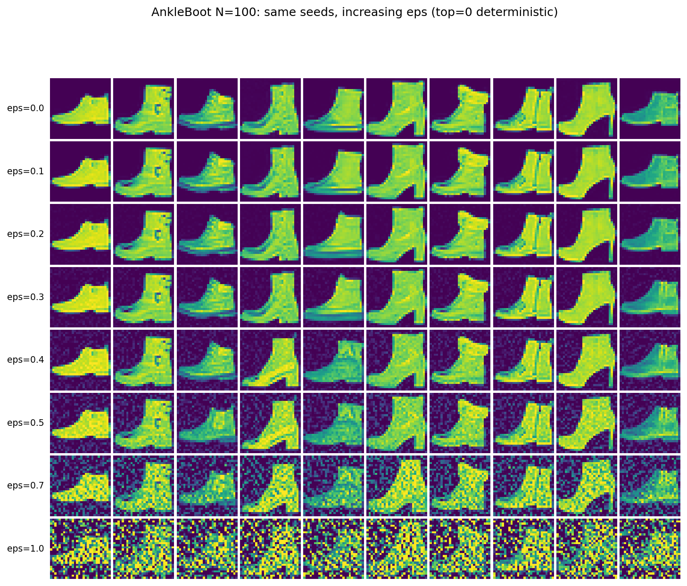
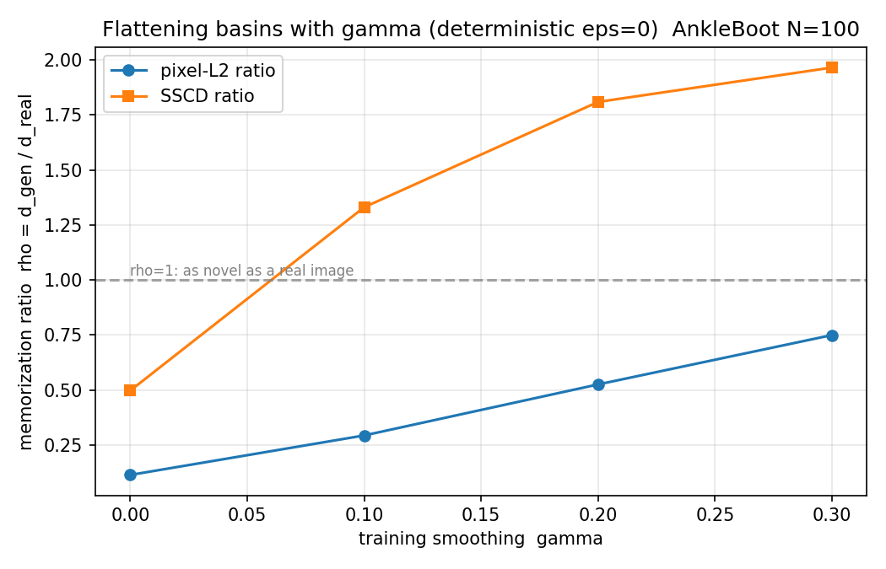
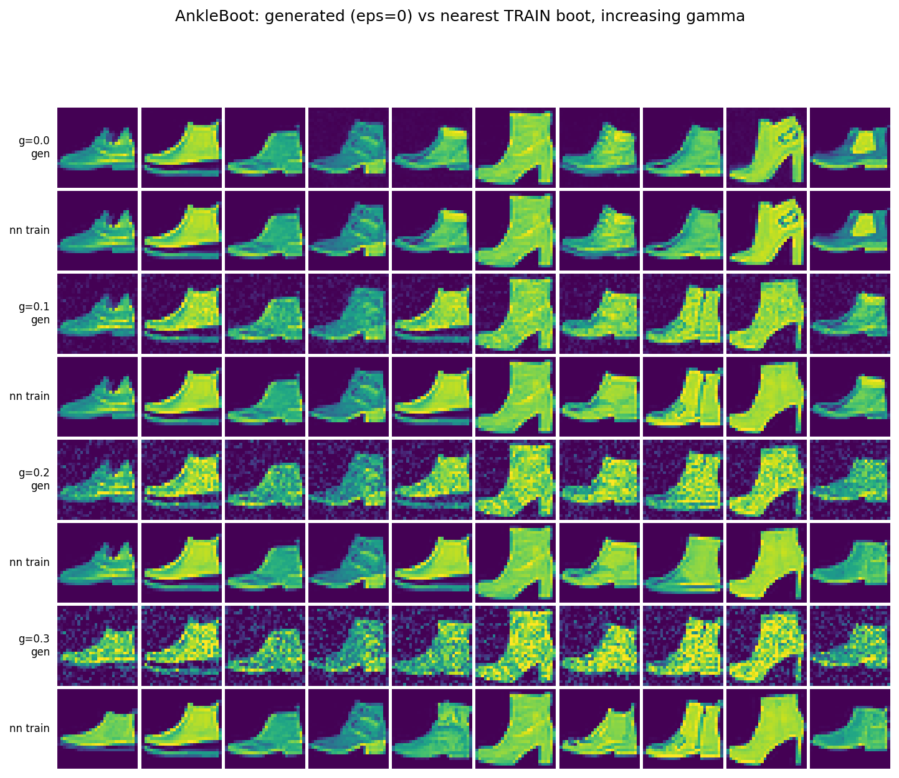
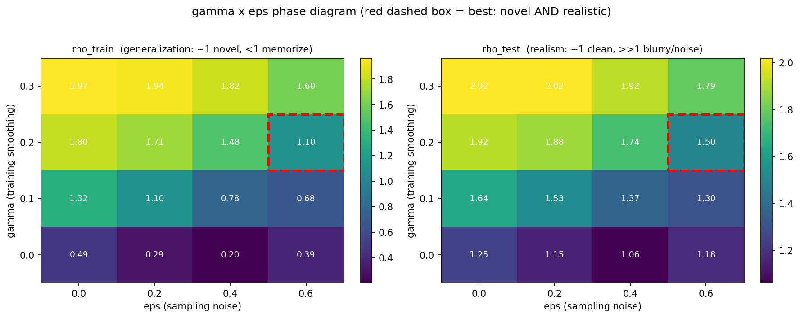

In small-data, train-from-scratch flow matching, $\gamma$ and $\varepsilon$ can only move a model along a fixed memorization $\leftrightarrow$ generalization $\leftrightarrow$ quality frontier; they cannot take it off that frontier. One cannot simultaneously achieve "does not memorize" and "high sample quality" from $N\!\approx\!10^2$ images alone, because the missing information is not in the data. Escaping the frontier requires a pretrained prior. The distinctive value of $\varepsilon$ is precisely that, as an inference-time knob, it can be applied to such a pretrained model at zero additional training cost.
Along the way the project also produced two reusable methodological contributions: (i) a demonstration that naive stochastic sampling over-reports "escape" from memorization because injected noise grain inflates distance metrics — controllable with a clean-tail (churn) sampler; and (ii) a coverage-controlled, copy-detection (SSCD) based memorization metric that cleanly separates novelty from realism.
Low-data generative modeling is increasingly important in privacy-sensitive, specialist domains (medical imaging, industrial defect detection, rare-species data) where memorization is a direct privacy leak: the generator reproduces training examples verbatim. Diffusion and flow-matching models are known to memorize when data is scarce (Carlini et al. 2023; Somepalli et al. 2023; Gu et al. 2023), and to generalize when data is abundant or the architecture is suitably constrained (Kadkhodaie et al. 2024; Kamb & Ganguli 2024).
The project began as a study of interpolation-schedule design $(\alpha_t,\beta_t,\gamma_t)$, but two concurrent works (arXiv:2509.01629, arXiv:2510.06634) covered most of that ground in the large-data regime. I therefore re-scoped to the narrower, less-explored question above: the division of labour between training-time noise $\gamma$ and inference-time noise $\varepsilon$ specifically in the low-data memorization regime.
With source $x_0\sim\mathcal{N}(0,I)$ and target $x_1\sim p_{\text{data}}$, the stochastic interpolant (Albergo & Vanden-Eijnden, 2023; Lipman et al., 2023)
$$x_t=\alpha(t)\,x_0+\beta(t)\,x_1,\qquad \alpha(0)=\beta(1)=1,\quad\alpha(1)=\beta(0)=0,$$has conditional drift $\dot{x}_t=\dot{\alpha}\,x_0+\dot{\beta}\,x_1$. Flow matching fits $v_\theta$ to the marginal velocity $v(x,t)=\mathbb{E}[\dot{\alpha}\,x_0+\dot{\beta}\,x_1\mid x_t=x]$.
All experiments use the conditional-OT (linear) path $\alpha=1-t,\;\beta=t$ (drift $x_1-x_0$). We keep $\alpha,\beta$ general through §2.3 to show memorization is a property of the empirical target, not the linear schedule, then specialize back from §2.4 on.
Eliminating $x_0=(x_t-\beta x_1)/\alpha$ from the drift and taking $\mathbb{E}[\cdot\mid x_t=x]$ gives, with the schedule Wronskian $W(t):=\alpha\dot{\beta}-\dot{\alpha}\beta$:
For conditional-OT $W\equiv1$, so $\hat{x}_1=x+(1-t)v$. The velocity thus encodes the posterior mean of the endpoint, letting us read off where any trajectory is heading from any trained network — essential for diagnosing memorization when the model only outputs a velocity.
Take the target to be the empirical data distribution $p_{\text{data}}=\frac{1}{N}\sum_{n=1}^N\delta_{x^{(n)}}$, and derive $\hat{x}_1(x,t)$ from first principles.
Step 1. Conditioned on $x_1=x^{(n)}$, we have $x_t\mid x_1=x^{(n)}\sim\mathcal{N}\!\big(\beta(t)\,x^{(n)},\,\alpha(t)^2 I\big)$.
Step 2 — Bayes' rule. With uniform prior $P(x_1=x^{(n)})=1/N$,
$$P(x_1=x^{(n)}\mid x_t=x)\;\propto\;\exp\!\Big(-\frac{\lVert x-\beta(t)x^{(n)}\rVert^2}{2\,\alpha(t)^2}\Big),$$so the normalized posterior is a softmax over the $N$ training points with inverse temperature $1/\alpha(t)^2$:
$$w_n(x,t)=\operatorname{softmax}_n\!\Big(-\frac{\lVert x-\beta(t)\,x^{(n)}\rVert^2}{2\,\alpha(t)^2}\Big).$$Step 3 — Posterior mean. Hence $\hat{x}_1(x,t)=\sum_n w_n(x,t)\,x^{(n)}$ is a weighted average of training points (attention with query $x$, keys $\beta(t)x^{(n)}$, temperature $\alpha(t)^2$). The optimal velocity field is
$$v^\star(x,t)=\frac{\dot{\alpha}(t)\,x+W(t)\sum_n w_n(x,t)x^{(n)}}{\alpha(t)},$$computable in closed form from $\{x^{(n)}\}$, no learning required.
Step 4 — Path collapse as $\alpha(t)\to0$. Define the Memorizing Entropy (ME)
$$M^\star(t,x)=-\sum_n w_n(x,t)\log w_n(x,t)\;\in[0,\log N].$$Since $\alpha(1)=0$, the softmax temperature $\alpha(t)^2\to0$ as $t\to1$, and for any $x$ with a unique nearest training point $n^\star$:
$$w_n(x,t)\;\xrightarrow[t\to1]{}\;\mathbb{1}[n=n^\star(x)],\qquad M^\star(t,x)\;\xrightarrow[t\to1]{}\;0.$$Conclusion. The probability-flow ODE driven by $v^\star$ transports every initial $x_0$ exactly onto one of the $N$ training points, for any admissible schedule — not a special property of the linear path. Memorization is forced purely by $\alpha(t)\to0$.
Memorizing Entropy under finite capacity. For a real trained model $v_\theta=v^\star+\delta_\theta$, the capacity/optimization error $\delta_\theta$ shifts the implied endpoint. Reading the assignment weights off the network's own endpoint estimate:
$$\hat{x}_1^\theta(x,t)=\frac{\alpha\,v_\theta-\dot{\alpha}\,x}{W},\qquad w_n^\theta(x,t)=\operatorname{softmax}_n\!\Big(-\frac{\lVert \hat{x}_1^\theta(x,t)-x^{(n)}\rVert^2}{2\tau^2}\Big)$$with reference temperature $\tau$ set to the median train nearest-neighbor gap. The realized memorizing entropy $\overline{M}^\theta\in[0,\log N]$ is a direct, field-level generalization score: $\overline{M}^\theta\approx0$ signals memorization; $\overline{M}^\theta\approx\log N$ signals generalization.

$\varepsilon$ (sampling noise). The probability-flow ODE and a one-parameter family of SDEs share all marginals. The marginal score is derived from the velocity:
$$s(x,t)=\nabla\log p_t(x)=\frac{\beta(t)\,v(x,t)-\dot{\beta}(t)\,x}{\alpha(t)\,W(t)},$$ $$dx=\Big[v+\tfrac{\varepsilon^2}{2}s\Big]dt+\varepsilon\,dW.$$Thus $\varepsilon$ can be added at sampling time to a model trained without any noise, at zero training cost.
$\gamma$ (interpolation / training noise). Two variants were studied: a crude version that smooths the target ($x_1\to x_1+\gamma\eta$, turning the empirical measure into a KDE of bandwidth $\gamma$), and an endpoint-preserving version $x_t=\alpha(t)x_0+\beta(t)x_1+\gamma_t z$ with $\gamma_t=4\gamma\,\alpha(t)\beta(t)$ (vanishing at both ends, smoothing only the learned field).
The memorizing field can be thought of as an energy landscape whose basins are the training points. Memorization = landing at a basin bottom; generalization = settling between basins. $\gamma$ reshapes the landscape (flattens basins); $\varepsilon$ supplies stochastic kinetic energy at sampling time.

src/optimal_model.py) as an exact reference.src/unet.py, ~3.7M params), conditional-OT flow matching, trained from scratch with fixed compute. Single-class was adopted to remove class-imbalance and cross-class "hopping" confounds.with $\rho\ll1$ = memorize, $\rho\approx1$ = as novel as a real held-out image. Pixel-$L_2$ was upgraded to SSCD (self-supervised copy-detection descriptor). Two ratios are used: $\rho_{\text{train}}$ (novelty, vs the training set) and $\rho_{\text{test}}$ (realism, distance to the real-boot manifold).
Across dimensions $d=2\dots102$, the trained MLP reproduced the analytic optimal field to within MMD $\sim10^{-3}$, validating the implementation and the optimal-field reference.
The posterior entropy $H(w)$ collapses to 0 by $t=1$; the collapse sharpens with dimension (collapse time $t^{*}$ falls from $\sim0.70$ at $d=16$ to $\sim0.33$ at $d=256$) and delays with data size $N$. The trained network lags the optimal field, with the lag saturating at $\Delta t^{*}\!\approx\!0.16$.

Crucial correction. $H(w)\to0$ is partly a readout artifact: over a finite reference set, the softmax is forced to one-hot as $(1-t)\to0$ regardless of where the sample lands. $H(w)$ therefore cannot distinguish "landed on a training point" from "landed on a novel point." This motivated abandoning entropy in favour of the distance-based memorization ratio $\rho$ — an important lesson in choosing a metric that measures the phenomenon and not an artifact of the parameterization.
On FashionMNIST, small-$N$ models reproduce training images near-verbatim; top-$k$ nearest-neighbour analysis shows a generated image matches exactly one training image at tiny distance (NN2/NN1 distance ratio $\approx 7$) — instance-level memorization, not class-level resemblance.

Sweeping per-class $N$ (single-class Ankle boot, fixed compute) gives a clean memorization → generalization phase transition: SSCD $\rho$ rises monotonically $0.15\,(N{=}10)\to0.60\,(N{=}100)\to1.05\,(N{=}300)\to1.12\,(N{=}1000)$, crossing the "novel" line near $N\approx300$.

A naive SDE appeared to escape ($\rho_{\text{SSCD}}$ crossing 1 near $\varepsilon\approx0.35$). This was an artifact: the injected noise leaves a high-frequency grain that inflates $d_{\text{gen}}$ regardless of content. With a clean-tail (churn) sampler (noise only for $t<0.7$, then deterministic re-cohering), the apparent escape largely disappears: $\rho_{\text{SSCD}}$ stays $0.5\!-\!0.7$ up to $\varepsilon=0.7$, and only "escapes" at $\varepsilon=1.0$ by destroying the image. $\varepsilon$ is a manifold-projection / realism force, not an escape lever.


Training with smoothing $\gamma$ and sampling deterministically ($\varepsilon=0$), SSCD $\rho_{\text{train}}$ rises from $0.50\,(\gamma{=}0)$ past 1 already at $\gamma=0.1$ ($1.33$), confirming that flattening the basins lets deterministic trajectories settle between training points. But samples become progressively blurry as $\gamma$ grows — a quality cost.


The joint phase diagram shows two opposing gradients: $\gamma$ raises novelty $\rho_{\text{train}}$ (and degrades realism $\rho_{\text{test}}$); $\varepsilon$ lowers $\rho_{\text{train}}$ (pulls back toward memorization) while modestly improving realism. No cell achieves both $\rho_{\text{train}}\!\approx\!1$ and $\rho_{\text{test}}\!\approx\!1$.

The findings assemble into one coherent statement. In small-data, train-from-scratch flow matching there is an intrinsic frontier relating memorization, generalization (novelty), and sample quality (realism):
Crucially, neither knob injects the information that 100 images do not contain. Moving along the frontier is all they can do; they cannot leave it. Genuinely attaining both "does not memorize" and "high quality" requires an external prior — i.e., a pretrained model carrying knowledge of the broader data manifold. This also matches deployment reality, where few-shot generation is overwhelmingly done by adapting large pretrained models (LoRA / DreamBooth), not training from scratch.
Within that reframing, $\varepsilon$ acquires its real value: being a pure inference-time operation derived algebraically from the velocity (§2.4), it can be applied to any pretrained generator at zero training cost — a model-agnostic realism/diversity knob — whereas $\gamma$ requires (re)training.
This phase was, in hindsight, a sequence of hypotheses sharpened by their own falsification:
It began with the intuitive thesis "two noise sources, both should help against memorization." The toy models forced a first correction — the entropy collapse metric I had built was measuring a parameterization artifact, not memorization.
On real images, the appealing result "$\varepsilon$ escapes memorization" turned out, on closer scrutiny, to be noise grain fooling the metric. Designing the clean-tail control and watching the escape evaporate was the turning point of the project: it replaced an attractive but wrong claim with a defensible negative one.
$\gamma$ then did work — but introduced a quality cost — and the "smarter" $\gamma_t$ I expected to break the trade-off simply traced the same frontier.
The cumulative lesson is conceptual: the limiting factor in low-data generative modeling is information, not the choice of where to inject noise.
Albergo, Boffi & Vanden-Eijnden, Stochastic Interpolants (2023) · Song et al., Score-Based Generative Modeling through SDEs (ICLR 2021) · Karras et al., Elucidating the Design Space of Diffusion Models (NeurIPS 2022) · Lipman et al., Flow Matching for Generative Modeling (ICLR 2023) · Carlini et al., Extracting Training Data from Diffusion Models (2023) · Somepalli et al., Understanding and Mitigating Copying in Diffusion Models (2023) · Kadkhodaie et al., Generalization in diffusion models (ICLR 2024) · Kamb & Ganguli, An analytic theory of creativity in convolutional diffusion (2024)